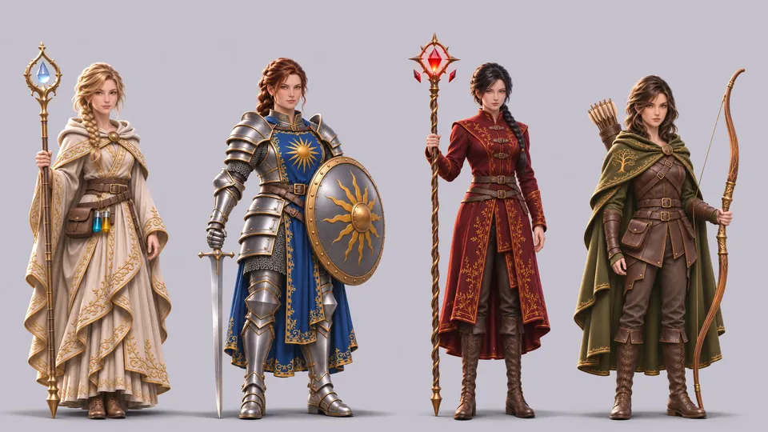
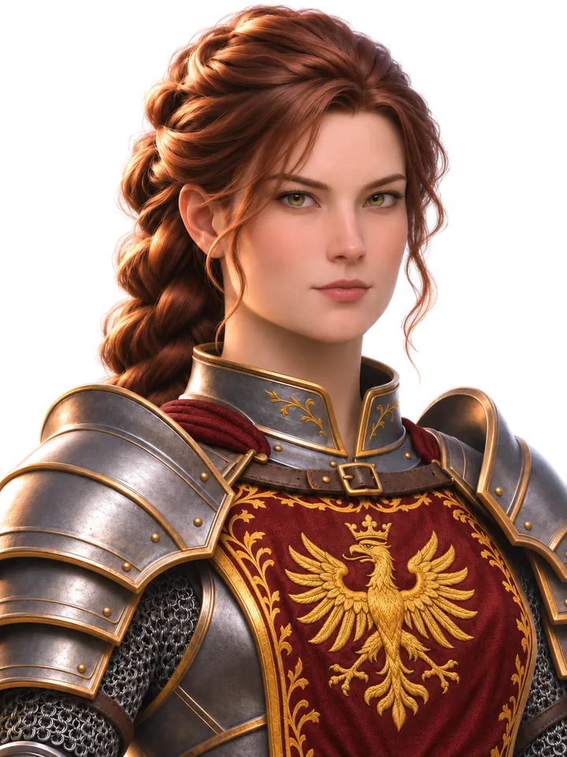
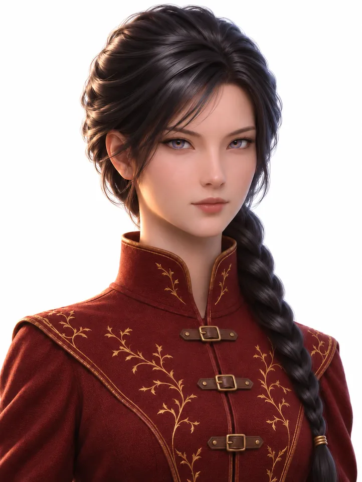
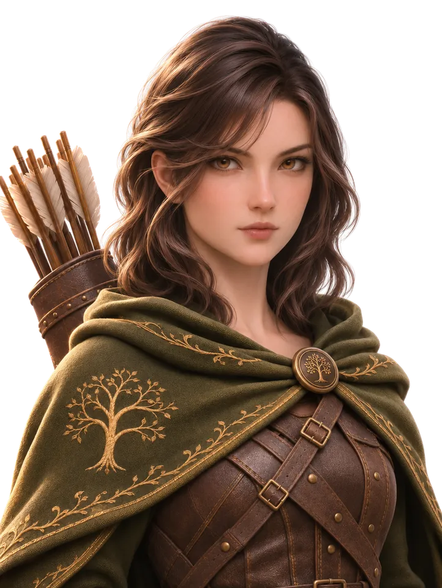

The Four Jobs
Tank, ranged damage, healer and magic damage, each taught by its own guild in Hayn.
The eight heroes on this page, four women and four men, are the characters you choose from in the character creator. Your character can learn all four jobs, switch between them and level each one separately. Different races to choose from will come later. Ability names are working names and will change as the jobs are tuned.












Paladin
Tank · sword and shield, blessed
Paladins stand in front. They hold an enemy's attention, take the blows and keep the rest of the party out of harm's way.
- Combo strike
- Shield Bash
- Provoke
- Holy Guard
- Radiant Sweep
“Shield up. Again. The wolf won't wait for you to be ready.”
Bron

Ranger
Ranged damage · bow
Rangers fight from a distance, set traps and leap back out of reach when a wolf gets too close.
- Quick Shot
- Piercing Arrow
- Volley
- Snare Trap
- Disengage
“Breathe out, then loose. The forest is patient. Be more patient.”
Hagen

White Mage
Healer · staff
White Mages keep people alive: heals for one or for everyone, healing over time, cleansing poison, and raising the fallen.
- Stone
- Cure
- Medica
- Regen
- Esuna
- Raise
“Keep them standing. That is the whole job, and it is enough.”
Mira

Elementalist
Magic damage · staff
Elementalists throw fire, frost, lightning and earth: bolts, cones, channelled beams and spikes from the ground, with a short blink to get clear.
- Fire Bolt
- Frost Cone
- Lightning Beam
- Earth Spike
- Blink
“Fire is easy. Stopping is the hard part. Mind the books.”
Elwyn